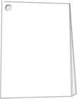
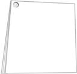
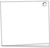
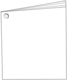
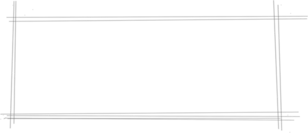

相关实践

2010年10月，进入虫二设计工作室开始学习建筑动画建筑概念设计方面的知识。

2011年10月，参与岳阳市旅游局“环南湖旅游规划设计”动画项目制作。

2012年4-5月,参与湖南理工学院小区蔡老师别墅（美式田园风格）室内设计项目。

2012年8月，担任岳阳市虫二设计工作室环艺方向软件主教
2013年1月，参与岳阳市济海物流园鸟瞰规划设计项目。
自我评价
我是一个对生活和设计充满无限热情的人。喜欢书籍、电影、音乐、摄影、旅游。
大学四年的锻炼，让我对环境有很好的适应能力。通过与团队一起合作完成各项设计，养成了一种良好的团队精神。在生活与工作上都用一种积极的态度去面对。即将步入社会踏上一个新的旅途的我们都很迷茫，不知道第一份工作会是什么会遇见怎样的同事怎么样的领导，但我相信不管在什么时候只要脚踏实地，走好当下的每一步，每天以一个崭新的姿态去迎接它，美好的明天终究会到来的。

个人主页:www.xxx.com
电子邮箱:dianzi@163.com
电话:15510905994